Chubekhevi is a blissful part of Zemo Svaneti, located in the north of Georgia at the foot of Western Caucassus mountains


Joint of administrative units of Tchuberi and Nakra, there are Nenskra and Nakra valleys, joined by wondorous Utviri pass


Blissful Chubekhevi can be reached every morning by taking Line Cab from Zugdidi in the west or form Mestia in the east